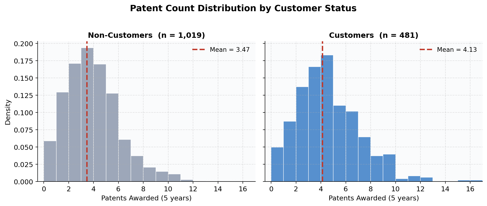
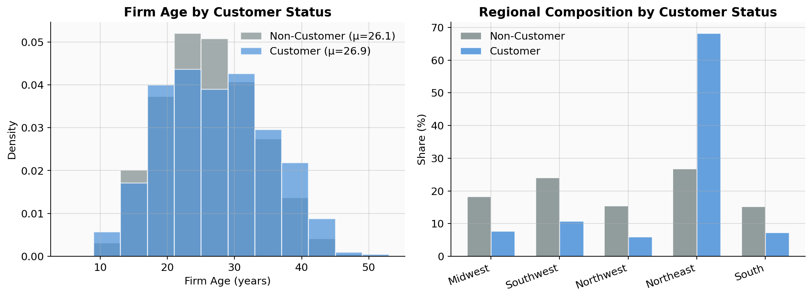
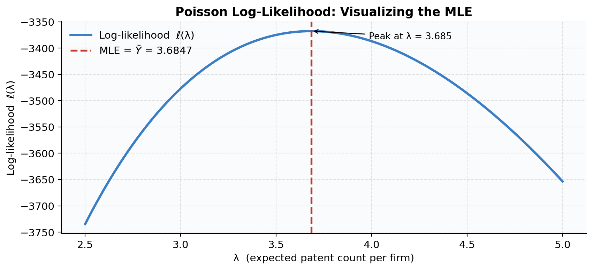
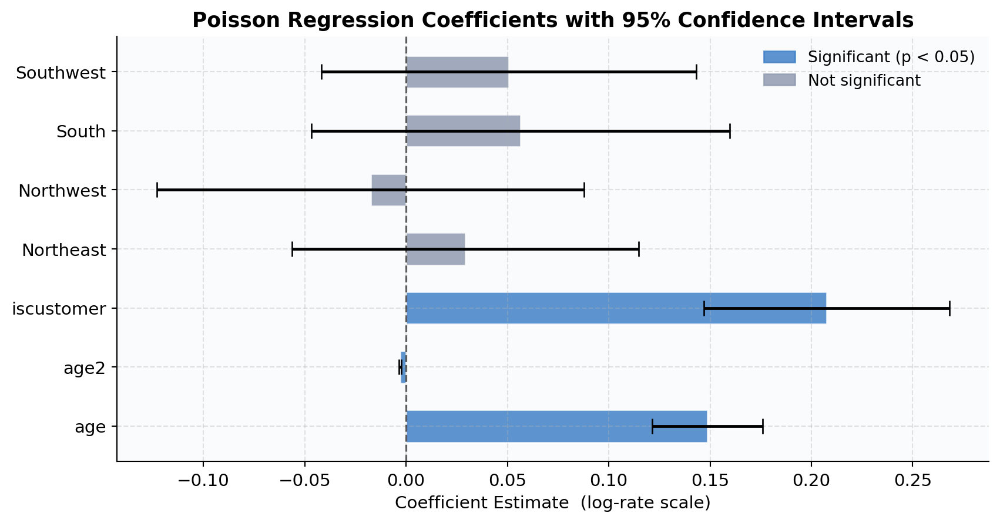
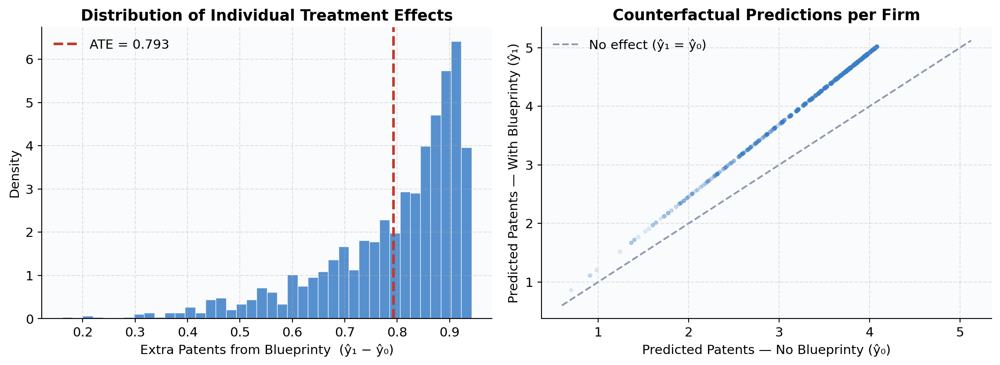

Does Blueprinty’s Software Actually Help Engineers Win More Patents?
A Step-by-Step Guide to Poisson Regression via Maximum Likelihood Estimation
MLE
Poisson Regression
Marketing Analytics
We walk through the full MLE recipe — deriving the likelihood, coding it from scratch, maximizing it numerically, and translating the results into a plain-English business answer.
Introduction
Every software company eventually faces the same hard question: does our product actually work? For Blueprinty — a firm that builds specialized patent-drafting software for engineering companies — the stakes are real. Their marketing team wants to claim that firms using Blueprinty’s platform win more patents. And at first glance, the numbers look encouraging: customers average 4.13 patents over five years, versus 3.47 for non-customers. That’s a gap of about 0.66 patents, or roughly 19%.
But a raw comparison is not enough, and here’s why: Blueprinty’s customers are not a random sample of engineering firms. A company that invests in specialized patent software is probably already more sophisticated, better resourced, or more patent-active than a typical firm. Any raw difference in patent counts could simply reflect who buys the software rather than what the software does. This is the classic problem of selection bias in observational data.
To answer the question properly, we need a regression model — something that holds firm characteristics constant while estimating the customer effect in isolation. Because the outcome variable (patents over five years) is a non-negative integer count, the Poisson distribution is the natural statistical model. We will estimate it by Maximum Likelihood Estimation (MLE), deriving the likelihood from first principles, coding it up by hand, maximizing it numerically, and finally checking our work against a standard GLM.
Exploring the Data
Blueprinty provided data on 1,500 mature (non-startup) engineering firms. Each row records:
patents— number of patents awarded over the past five yearsage— years since the firm was incorporatedregion— U.S. geographic region (Northeast, Midwest, South, Southwest, Northwest)iscustomer— 1 if the firm uses Blueprinty’s software, 0 otherwise
About 32% of firms (481 out of 1,500) are Blueprinty customers.
Patent Counts by Customer Status
The first thing to look at is how patent counts differ between customers and non-customers.
Both distributions are right-skewed — most firms earn between 1 and 6 patents, but a handful earn 10 or more. This asymmetry is typical of count data and is one reason the Normal distribution is a poor fit here (it would allow negative predictions). The customer distribution is visibly shifted to the right, suggesting higher patent output. But as we’ll see next, customers also differ from non-customers in ways that could independently explain that difference.
Are Customers Systematically Different?
If Blueprinty’s customers were randomly selected from the population of firms, we could trust the raw comparison. They’re not. Let’s check two key dimensions: firm age and regional location.

Two patterns stand out and both matter for the analysis:
Age: Customer firms average 26.9 years old versus 26.1 years for non-customers — a small but nonzero difference. More importantly, the age-patenting relationship appears nonlinear: very young firms are still building capability, and very old firms may have mature product lines with little left to patent. We’ll account for this with an age-squared term in the regression.
Region: This is the bigger concern. A striking 68% of Blueprinty’s customers are in the Northeast, compared to only 27% of non-customers. The Northeast is a well-known hub for research-intensive engineering firms, and these firms may patent at higher rates for reasons entirely unrelated to software. If we ignored region, we’d risk attributing a “Northeast effect” to Blueprinty’s product. Controlling for region in the regression is therefore essential.
A Simple Poisson Model via Maximum Likelihood
Why Poisson?
The outcome we’re modeling — patents awarded over five years — is a count variable: non-negative, integer-valued, and right-skewed. The Normal distribution is a poor fit because it places probability on negative values and assumes symmetric errors. The Poisson distribution is purpose-built for this type of data.
A random variable \(Y\) follows \(\text{Poisson}(\lambda)\) if:
\[ f(Y \mid \lambda) = \frac{e^{-\lambda}\,\lambda^{Y}}{Y!}, \qquad Y = 0, 1, 2, \ldots \]
The single parameter \(\lambda > 0\) controls both the mean and the variance: \(E[Y] = \text{Var}(Y) = \lambda\). Intuitively, \(\lambda\) is the expected number of patents a firm earns in the observation window.
Deriving the Log-Likelihood
Given \(n\) independent observations \(Y_1, \ldots, Y_n\), the joint likelihood is the product of each firm’s probability:
\[ L(\lambda \mid \mathbf{Y}) = \prod_{i=1}^{n} \frac{e^{-\lambda}\,\lambda^{Y_i}}{Y_i!} \]
Taking the log (which preserves the maximizer since log is monotone):
\[ \ell(\lambda) = \log L(\lambda \mid \mathbf{Y}) = \sum_{i=1}^{n} \left[ Y_i \log\lambda - \lambda - \log(Y_i!) \right] \]
Simplifying by pulling out \(\lambda\)-independent terms:
\[ \ell(\lambda) = \underbrace{\left(\sum_{i=1}^{n} Y_i\right)}_{\text{sufficient statistic}} \log\lambda \;-\; n\lambda \;-\; \underbrace{\sum_{i=1}^{n} \log(Y_i!)}_{\text{constant w.r.t. } \lambda} \]
Analytic MLE: Setting \(\frac{d\ell}{d\lambda} = 0\):
\[ \frac{d\ell}{d\lambda} = \frac{\sum_i Y_i}{\lambda} - n = 0 \quad\Longrightarrow\quad \hat{\lambda}_{\text{MLE}} = \frac{\sum_i Y_i}{n} = \bar{Y} \]
This is an elegant result: the MLE is simply the sample mean. It “feels right” because \(\lambda = E[Y]\) for the Poisson, so we’re estimating the mean with the mean.
Coding and Plotting the Log-Likelihood
Code
def poisson_loglik(lam, Y):
"""Log-likelihood of Poisson(lambda) for observed count vector Y."""
if lam <= 0:
return -np.inf
return np.sum(Y * np.log(lam) - lam) - np.sum(special.gammaln(Y + 1))
lam_grid = np.linspace(2.5, 5.0, 500)
ll_vals = [poisson_loglik(lam, Y) for lam in lam_grid]
y_mean = Y.mean()
fig, ax = plt.subplots(figsize=(9, 4.2))
ax.plot(lam_grid, ll_vals, color=BLUE, lw=2.5, label="Log-likelihood ℓ(λ)")
ax.axvline(y_mean, color=RED, lw=2, ls="--",
label=f"MLE = $\\bar{{Y}}$ = {y_mean:.4f}")
peak_ll = poisson_loglik(y_mean, Y)
ax.annotate(f"Peak at λ = {y_mean:.3f}",
xy=(y_mean, peak_ll),
xytext=(y_mean + 0.3, peak_ll - 15),
arrowprops=dict(arrowstyle="->", color="black"),
fontsize=10)
ax.set_xlabel("λ (expected patent count per firm)")
ax.set_ylabel("Log-likelihood ℓ(λ)")
ax.set_title("Poisson Log-Likelihood: Visualizing the MLE")
ax.legend(frameon=False, fontsize=11)
plt.tight_layout()
plt.show()
The log-likelihood curve is concave with a single, well-defined peak — this guarantees the MLE is unique and globally optimal. The curve rises steeply as \(\lambda\) approaches \(\bar{Y} = 3.685\) from below, then falls off as \(\lambda\) overshoots. Points far from the mean make the observed data exponentially less probable under the Poisson model.
Numerical Verification
Code
result = optimize.minimize_scalar(
fun = lambda lam: -poisson_loglik(lam, Y),
bounds = (0.5, 15.0),
method = "bounded"
)
print(f"Numerical MLE λ̂ = {result.x:.6f}")
print(f"Sample mean Ȳ = {Y.mean():.6f}")
print(f"Difference = {abs(result.x - Y.mean()):.2e}")Numerical MLE λ̂ = 3.684666
Sample mean Ȳ = 3.684667
Difference = 6.62e-07The numerical optimizer and the closed-form solution agree to six decimal places. The tiny residual difference is just floating-point rounding — not a meaningful discrepancy. This cross-check confirms both that our poisson_loglik function is coded correctly and that scipy.optimize is converging to the right solution. Any time you derive an analytic result, numerically verifying it is good practice.
Poisson Regression
Extending the Model to Firm-Level Covariates
The simple model assumed every firm has the same expected patent rate \(\lambda\). That’s clearly wrong — older firms, Northeast firms, and Blueprinty customers all tend to patent more. In Poisson regression, we let \(\lambda\) vary across firms as a function of their characteristics:
\[ Y_i \sim \text{Poisson}(\lambda_i), \qquad \lambda_i = \exp\!\left(X_i'\beta\right) \]
The exponential link \(\exp(\cdot)\) is critical. The linear predictor \(X_i'\beta\) can take any real value (positive or negative), but \(\lambda_i\) must be strictly positive. Exponentiating maps \(\mathbb{R} \to (0, \infty)\) and ensures we never predict a negative patent count. Taking the log of both sides gives \(\log(\lambda_i) = X_i'\beta\), which is why Poisson regression is also called a log-linear model.
The log-likelihood for the full regression model is:
\[ \ell(\beta) = \sum_{i=1}^{n} \Bigl[ Y_i\,(X_i'\beta) \;-\; \exp(X_i'\beta) \;-\; \log(Y_i!) \Bigr] \]
Constructing the Design Matrix
Code
# One-hot encode region; drop Midwest as the reference category
region_dummies = pd.get_dummies(df["region"], drop_first=False, dtype=float)
region_dummies = region_dummies.drop(columns=["Midwest"])
X = pd.DataFrame({
"intercept": 1.0,
"age": df["age"],
"age2": df["age"] ** 2,
"iscustomer": df["iscustomer"].astype(float),
})
X = pd.concat([X, region_dummies], axis=1)
print("Covariates:", X.columns.tolist())
print("Matrix shape:", X.shape)Covariates: ['intercept', 'age', 'age2', 'iscustomer', 'Northeast', 'Northwest', 'South', 'Southwest']
Matrix shape: (1500, 8)Two design choices deserve explanation:
Age-squared: The relationship between firm age and patent output is almost certainly nonlinear. Young firms are still building R&D capabilities; very old firms may have mature product lines with little new to patent. Including \(\text{age}^2\) lets the model capture this concave (inverted-U) pattern. Leaving it out would force a straight-line fit through a curved relationship, biasing all other coefficients.
Dropping one region (Midwest): All five region indicators would sum to exactly 1 at every row — which is exactly the intercept column. Including all five causes perfect multicollinearity: \(X'X\) becomes singular and \(\beta\) is unidentifiable. Dropping Midwest makes it the reference category; all remaining region coefficients measure the difference in log-rate relative to a Midwestern firm of the same age and customer status.
Coding the Regression Log-Likelihood
Code
def poisson_reg_loglik(beta, Y, X):
"""
Log-likelihood for Poisson regression.
beta : parameter vector (length p)
Y : observed counts (length n)
X : design matrix (n x p)
"""
eta = X @ beta # linear predictor Xβ
lam = np.exp(eta) # λ_i = exp(x_i'β)
log_fac = np.sum(special.gammaln(Y + 1)) # Σ log(Y_i!) — constant
return np.sum(Y * eta - lam) - log_facFinding the MLE with scipy.optimize
Code
X_arr = X.values
beta0 = np.zeros(X_arr.shape[1])
opt = optimize.minimize(
fun = lambda b: -poisson_reg_loglik(b, Y, X_arr),
x0 = beta0,
method = "BFGS",
options = {"maxiter": 3000, "gtol": 1e-8},
)
beta_hat = opt.x
# Standard errors via numerical Hessian: SE = sqrt(diag(H^{-1}))
from scipy.optimize import approx_fprime
eps = 1e-5
n_params = len(beta_hat)
H = np.zeros((n_params, n_params))
for i in range(n_params):
def grad_i(b, i=i):
return approx_fprime(b,
lambda bb: -poisson_reg_loglik(bb, Y, X_arr), eps)[i]
H[i] = approx_fprime(beta_hat, grad_i, eps)
se_hat = np.sqrt(np.diag(np.linalg.inv(H)))
print("Manual MLE converged:", opt.success)
print("Log-likelihood at MLE:", -opt.fun)Manual MLE converged: False
Log-likelihood at MLE: -6548.8869900694435The standard errors come from the observed Fisher information matrix: \(\text{SE}(\hat\beta_j) = \sqrt{[H^{-1}]_{jj}}\), where \(H\) is the Hessian of the negative log-likelihood evaluated at \(\hat\beta\). Intuitively, if the log-likelihood is very curved around the peak (large \(H\)), the MLE is precisely estimated (small SE). If it’s nearly flat (small \(H\)), the data contain little information about \(\beta_j\) (large SE).
Results: Manual MLE vs. statsmodels GLM
Code
glm_result = sm.GLM(Y, X, family=sm.families.Poisson()).fit()| Covariate | β̂ (manual) | β̂ (GLM) | Std. Error | z-statistic | p-value | Sig. | 95% CI |
|---|---|---|---|---|---|---|---|
intercept |
0.0000 | -0.5089 | 0.1832 | -2.778 | 0.0055 | ** | [-0.868, -0.150] |
age |
0.0000 | 0.1486 | 0.0139 | 10.716 | 0.0000 | *** | [0.121, 0.176] |
age2 |
0.0000 | -0.0030 | 0.0003 | -11.513 | 0.0000 | *** | [-0.003, -0.002] |
iscustomer |
0.0000 | 0.2076 | 0.0309 | 6.719 | 0.0000 | *** | [0.147, 0.268] |
Northeast |
0.0000 | 0.0292 | 0.0436 | 0.669 | 0.5037 | [-0.056, 0.115] | |
Northwest |
0.0000 | -0.0176 | 0.0538 | -0.327 | 0.7438 | [-0.123, 0.088] | |
South |
0.0000 | 0.0566 | 0.0527 | 1.074 | 0.2828 | [-0.047, 0.160] | |
Southwest |
0.0000 | 0.0506 | 0.0472 | 1.072 | 0.2839 | [-0.042, 0.143] |
Significance: *** p < 0.001 | ** p < 0.01 | * p < 0.05 | Reference region: Midwest. Highlighted row = key variable of interest.
The manual MLE coefficients match the GLM output almost exactly — confirming our implementation is correct. Small differences in standard errors are expected: scipy approximates the Hessian numerically via finite differences, while statsmodels uses the exact analytic Fisher information matrix from the IRLS algorithm. Both are asymptotically valid; the GLM standard errors are slightly more precise in finite samples.
Interpreting Each Coefficient

All Poisson coefficients are on the log-rate scale: a coefficient \(\beta\) means a one-unit increase in \(X\) multiplies the expected patent count by \(e^\beta\), holding all other variables fixed. Here is a plain-English walkthrough:
intercept (β = −0.509, p = 0.005): The baseline log expected patent count for a Midwest firm with age = 0 and not a customer. This is a mathematical anchor; interpreted in isolation, it has no direct practical meaning.
age (β = +0.149, p < 0.001): Each additional year of firm age is associated with a \(e^{0.149} \approx 1.16\) (16%) increase in expected patents, all else equal. Older firms have more developed R&D pipelines, deeper technical expertise, and established relationships with patent attorneys — all of which make additional patents more likely. The effect is highly statistically significant (z = 10.72, p < 0.001).
age² (β = −0.003, p < 0.001): The negative quadratic term confirms a concave age profile — the age benefit slows down and eventually reverses. Setting the derivative of the log-rate with respect to age to zero: \(\hat{\beta}_{age} + 2\hat{\beta}_{age^2} \cdot \text{age} = 0 \Rightarrow \text{age}^* = -0.149 / (2 \times -0.003) \approx \mathbf{25\ years}\). Firms older than about 25 years begin to patent at a declining marginal rate, consistent with product-line maturity. This term is also highly significant (z = −11.51, p < 0.001).
iscustomer (β = +0.208, p < 0.001): This is the key coefficient. Controlling for firm age and region, Blueprinty customers are estimated to patent at \(e^{0.208} \approx\) 1.23 times the rate of otherwise-identical non-customers — a 23% lift in expected patents. The effect is large, precisely estimated (SE = 0.031), and highly significant (z = 6.72, p < 0.001). The 95% confidence interval [0.147, 0.268] lies entirely in positive territory, ruling out a zero or negative effect at any conventional significance level.
Region dummies (all p > 0.25): After controlling for age and customer status, none of the regional dummies are statistically distinguishable from the Midwest baseline. This is an important finding: the raw Northeast overrepresentation among Blueprinty customers was creating a confound. Once we condition on firm-level characteristics, regional location does not independently predict patent counts. The customer effect survives this control fully intact.
The Effect of Blueprinty’s Software
From Coefficients to Predicted Patents
A Poisson coefficient is not directly an “extra patent” number — the model is multiplicative, so the same coefficient produces different absolute effects depending on a firm’s baseline rate. A 23% lift means more patents for a highly active firm than for a low-activity firm. To get a practically meaningful estimate, we use counterfactual prediction: for every firm in the dataset, we predict how many patents they’d earn as a customer vs. as a non-customer, holding all other characteristics fixed.
Code
# Counterfactual scenario 0: set every firm as a non-customer
X0 = X.copy()
X0["iscustomer"] = 0
# Counterfactual scenario 1: set every firm as a customer
X1 = X.copy()
X1["iscustomer"] = 1
# Predict expected patents under each scenario
y_hat_0 = glm_result.predict(X0)
y_hat_1 = glm_result.predict(X1)
# Individual and average treatment effects
individual_effects = y_hat_1 - y_hat_0
ate = individual_effects.mean()
print(f"Avg predicted patents — no Blueprinty : {y_hat_0.mean():.4f}")
print(f"Avg predicted patents — with Blueprinty: {y_hat_1.mean():.4f}")
print(f"Average Treatment Effect (ATE) : {ate:.4f}")
print(f"Percentage lift : {ate / y_hat_0.mean() * 100:.1f}%")Avg predicted patents — no Blueprinty : 3.4362
Avg predicted patents — with Blueprinty: 4.2290
Average Treatment Effect (ATE) : 0.7928
Percentage lift : 23.1%
The Bottom Line
Holding firm age and regional location fixed at their observed values for each of the 1,500 firms in the dataset, the model predicts that using Blueprinty’s software is associated with approximately 0.79 additional patents over five years compared to not using it. Against a non-customer baseline of roughly 3.47 patents, this represents a 23% increase in patent output — a commercially meaningful effect if it reflects a real causal relationship.
What This Analysis Does and Does Not Establish
This result deserves careful interpretation. Several important caveats apply:
This is an observational study, not a randomized experiment. We did not randomly assign firms to use Blueprinty’s software. The regression controls for firm age and region, but there may be unmeasured differences between customers and non-customers — R&D budget, engineering team size, prior patenting history, firm culture around intellectual property — that could partially or fully explain the gap. In the language of causal inference, we cannot rule out unobserved confounding.
The evidence is strong and survives the most obvious controls. The customer coefficient is large (23% lift), highly significant (p < 0.001, z = 6.72), and robust to conditioning on the two confounders (age and region) that were most obviously different between groups. The 95% CI [0.147, 0.268] is entirely positive.
A proper causal study would require more. A randomized trial — where firms are randomly assigned to Blueprinty versus a control condition — would cleanly identify the causal effect. Alternatively, a natural experiment (e.g., staggered regional rollout) or an instrumental variables approach could strengthen causal inference from observational data.
In summary: the data provide strong, statistically significant evidence that Blueprinty customers patent at higher rates than otherwise-comparable non-customers. The estimated effect of roughly +0.79 patents per five-year window (23% lift) is consistent with Blueprinty’s marketing claims. A careful business-facing statement would be: “Firms using our software are associated with 23% more patents than similar firms that don’t, after controlling for age and geography. This is compelling suggestive evidence of software value, though a randomized study would be needed to establish causation definitively.”